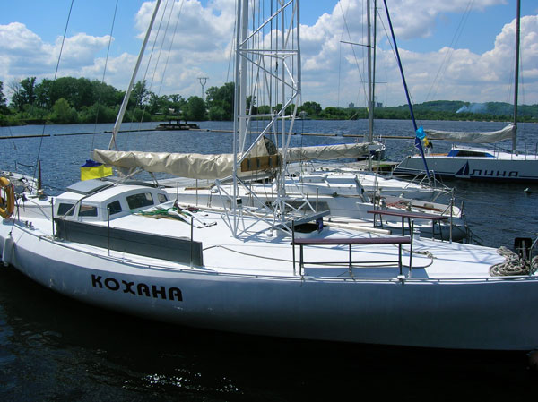

Капитан Андрей всегда рад видеть Вас на борту яхты "Кохана". Приглашаем Вас прогулятся по Днепру на одной из красивейших яхт Киева. Если путешествующих окажется больше чем может принять на борт одна яхта, то можно арендовать ещё от одной до трёх яхт из нашего яхт-клуба с пассажировместимосью от 10 до 20 человек каждая.
Добро пожаловать на борт яхты "Кохана"!
Про нас
Мы предоставляем аренду, прокат, прогулки на яхте "Кохана" под парусами в Киеве без посредников и агентов. Проще, выгодней, возможность торга. Круизно-спортивная, парусно-моторная яхта "Кохана" построена в Киеве по индивидуальному проекту с применением оригинальных технических решений не имеющих аналогов в мире. Надёжность и прочность конструкции яхты проверены в многочисленных походах по Днепру и Чёрному морю. Внешне яхта демонстрирует эстетическое совершенство форм и всегда привлекает внимание.
Есть стандартные маршруты для прогулок, но по отдельной договоренности можно предпринимать и более длительные походы. Аренда яхты в Киеве. Прогулки по Днепру. Отдых на Днепровских островах.
Наши маршруты
Маршрут №1
Прогулка от залива Берковщина до Печерской Лавры (на двигателе) и в направлении ниже Южного моста (под парусами).
Время прогулки - 2 часа.
Индивидуальный маршрут
Маршрут составляется индивидуально, по желанию заказчика.
Время - обсуждается.
Маршрут №2
Прогулка до острова Водников и Ольгинский с высадкой на "дикий" берег.
Время прогулки - от 4 часов.


